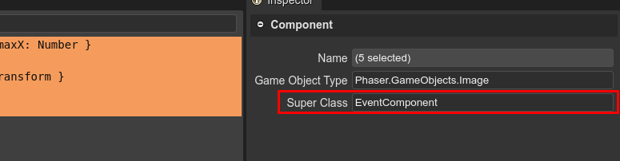

Implementing behaviors with the Phaser events
Many user components you will create will implement certain behavior of an object. This behavior should be initialized and later updated at every step of the game loop.
Game engines like Unity, that support a similar design pattern, use a Start and Update methods to implement the behavior of the component.
The Phaser framework does not provide a similar approach, components are not part of the Phaser API. However, Phaser provides a lot of events that you can handle and implement the gameplay. For example, you can simulate the Unity scripting using the user components and the Phaser events. You can create an EventComponent class that handles the events:
class EventComponent {
/**
* @param {Phaser.GameObjects.GameObject} gameObject
*/
constructor(gameObject) {
this.scene = gameObject.scene;
// first time the scene is updated, call the `start` method
this.scene.events.once(Phaser.Scenes.Events.UPDATE, this.start, this);
// each time the scene is updated, call the `update` method
this.scene.events.on(Phaser.Scenes.Events.UPDATE, this.update, this);
// if the object is destroyed, call the `destroy` method
gameObject.on(Phaser.GameObjects.Events.DESTROY, this.destroy, this);
}
start() {
// to be overridden in derived classes
}
update() {
// to be overridden in derived classes
}
destroy() {
// the object is destroyed, so we remove all the event handlers
this.scene.events.off(Phaser.Scenes.Events.UPDATE, this.start, this);
this.scene.events.off(Phaser.Scenes.Events.UPDATE, this.update, this);
}
}
Then, you can set the EventComponent class as super class to all your components:
Now, you can override the start, update, and destroy methods in the component classes.
class HorizontalMove extends EventComponent {
...
update() {
this.gameObject.x += this.deltaX;
}
}
The EventComponent class is just an example of what you can do. It has a weak point: not all components need to listen to all the events. It is a waste of resources adding scene listeners in all the cases.
Since v3.13.0, the editor can “write” for you a base class that could be a better solution. However, you can change its code and adapt it to your specific domain. Check the next section for more details.